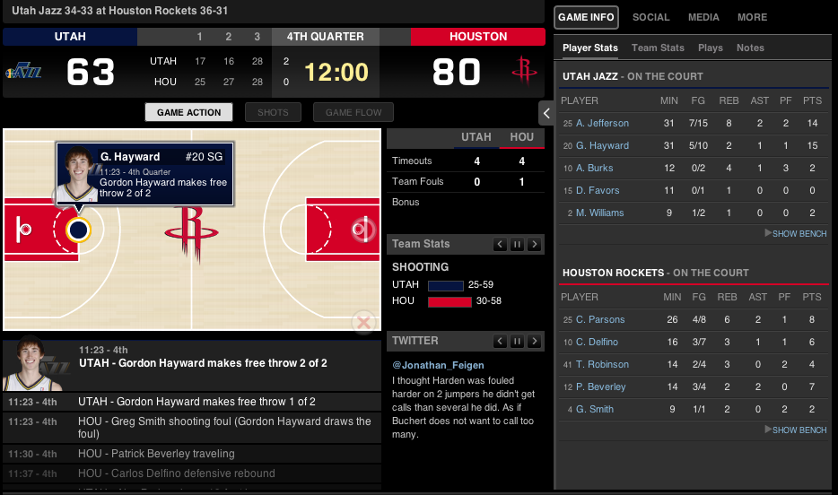

Real Time Web Applications
With Node.js
Logan Allred & Joel Thornton
Go to on your phone, tablet, or laptop
Presenters
Logan Allred
Front End Developer, FamilySearch
allredlt@familysearch.org
Joel Thornton
Front End Developer, FamilySearch
thorntonjn@familysearch.org
Topics Covered
- What are Real-Time Apps?
- Some Fun Demos
- Getting Started
- Tools Overview
- Add real-time features to your app!
What Are Real-Time Web Applications?
- Persistent Bi-Directional Connection
- Shared Event Notification
- Continuous Communication
- Multiple Data Sources/Event Streams
Why is it Cool?
- Live Fresh Data
- Immediate Feedback
- Minimal Connection Overhead
- Interactive and Engaging
Good Candidates
- Real-Time Communication, Chat, Instant Feedback
- Dashboards, Live Monitoring Diagnostics and Statistics
- Search, Filtering, Auto-Complete
- Social Applications - Facebook's Ticker and Twitter
- Multiplayer Games
- Collaborative Sharing Applications
How does it work?
- Multiple techniques
-
- Ajax Push
- Reverse Ajax
- Two-way-web
- HTTP Streaming
- HTTP server push
- Long-held HTTP request
- Long Polling
- Web Sockets
Real-Time Samples


These slides (Reveal.js)
Let's Build a Real-Time web app
- Simple Chat with Socket.IO
- create project(e.g http://github.com/thorntonjn/simple_chat.git)
- mkdir simple_chat;mkdir simple_chat/bin;cd simple_chat
- create package.json
- create bin/index.html
- create simple_chat.js
- Client Side
-
<script src="/socket.io/socket.io.js"></script> <script> var socket = io.connect('http://localhost'); socket.on('news', function (data) { console.log(data); socket.emit('my other event', { my: 'data' }); }); </script>
- Server Side
var io = require('socket.io').listen(80); io.sockets.on('connection', function (socket) { socket.emit('news', { hello: 'world' }); socket.on('my other event', function (data) { console.log(data); }); });
- Deploy App
- sudo easy_install pip && sudo pip install dotcloud
- dotcloud setup
- dotcloud create {your-app-name}
- create a dotcloud.yml
- dotcloud push
- http://deploy.dotcloud.com/Node.js/Socket.IO
Tools
WebSocket Protocol + Web Server
- Socket.IO / SockJS
- Nodejs + Express
Node.js Real-Time Development Frameworks
- shoe / dnode
- Sails.js
- SocketStream
- Derby
- Meteor
Socket.IO / SockJS
- Implementation of WebSocket protocol
- Falls back to Comet protocols
- Provides client and server implementations
Node.js + Express
- Asynchronous Event Driven Request Model
- Server Side Javascript
- More Consistent Client-Server Synchronization
- NPM
- Easier & Faster Build & Deployment
SocketStream
- Simple Modular Framework
- Dedicated to Real-Time Single-page Apps
- Designed to Integrate Easily With Other Modules
Sails.js
- Brand new
- Data-driven
- Patterned after Rails Active Record
- Provides built-in JSON API without code
- Automatically sends WebSocket messages on any change to Model
- Allows your WebSocket messages to use same middleware as the rest of you application
Derby
- Full Stack Application Framework
- Advanced Model Synching and Conflict Resolution With Racer
- Integrates With other Frameworks
- Modularity Provides Flexibility
Meteor
- Full Stack Application Framework
- Includes Deployment and Hosting
- Tightly Integrated - Walled Garden
- Model synchronization & pub/sub
- Opinionated
- Focus on Developer Productivity
Coding Example
- Frameworks and TOOLS
- Server Code
- Client Code
- Testing
- Build And Deploy
Hosted Services
Cloud hosting
- Nodejitsu
- AppFog / Nodester
- DotCloud
- heroku.com
(doesn't support WebSockets yet)
Server Code
function replacemeWithRealCode( selector ) {
if( supports3DTransforms ) {
var nodes = document.querySelectorAll( selector );
for( var i = 0, len = nodes.length; i < len; i++ ) {
var node = nodes[i];
if( !node.className ) ) {
node.className += ' roll';
}
};
}
}
Client Code
function replacemeWithRealCode( selector ) {
if( supports3DTransforms ) {
var nodes = document.querySelectorAll( selector );
for( var i = 0, len = nodes.length; i < len; i++ ) {
var node = nodes[i];
if( !node.className ) ) {
node.className += ' roll';
}
};
}
}
Test
npm install -replace with real commands
node server.js
Build and Deploy
git push heroku replace with real commands
Learn the 44 US Presidents
Frameworks and Tools
- NodeJS
- Express.io
- JQuery
- Bootstrap
Server Code
- Basic NodeJS server
- basic server
- static css and js files
- connects up express
- Express + IO
- Routes
- IO Routes
- Model
- EJS View Templates
Server Code
app.io.route('ready', function (req) {
req.session.name = req.data;
req.session.save(function () {
req.io.emit('game-type');
})
});
// Send back the session data.
app.io.route('game-type', function (req) {
req.session.gameType = req.data;
if (req.session.gameType === "team1-play") {
req.io.join("team1-play");
req.io.room(req.data).broadcast('announce', {
message: 'New client in the ' + req.session.gameType + ' room.'
})
}
...
req.session.save(function () {
req.io.emit('session', req.session)
})
});
Client Code
// Listen for update to single president
socket.on('update-president', function (presidents) {
myGame.updatePresidents(presidents);
});
// Listen for update-collison when someone else beat me to the guess
socket.on('president-allready-found', function (president) {
myGame.updatePresidents([president], true);
});
var updateServerWithFoundPresident = function(presidentFound) {
socket.emit('update-president', presidentFound );
}
Deploy To dotCloud
Create a dotcloud.yml file
www:
type: nodejs
config:
node_version: v0.8.x
Create a supervisorord.conf file
[program:node]
command = node app.js
directory = /home/dotcloud/current
Hosted Services
Cloud hosting
- Nodejitsu
- Nodester / AppFog
- heroku.com
(doesn't support web sockets yet)
Server Code
function replacemeWithRealCode( selector ) {
if( supports3DTransforms ) {
var nodes = document.querySelectorAll( selector );
for( var i = 0, len = nodes.length; i < len; i++ ) {
var node = nodes[i];
if( !node.className ) ) {
node.className += ' roll';
}
};
}
}
Client Code
function replacemeWithRealCode( selector ) {
if( supports3DTransforms ) {
var nodes = document.querySelectorAll( selector );
for( var i = 0, len = nodes.length; i < len; i++ ) {
var node = nodes[i];
if( !node.className ) ) {
node.className += ' roll';
}
};
}
}
Test
npm install -replace with real commands
node server.js
Build and Deploy
git push heroku replace with real commands
Q & A
http://github.com/redbugz/rootstech2013/
Logan Allred » allredlt@familysearch.org
Joel Thornton » thorntonjn@familysearch.org